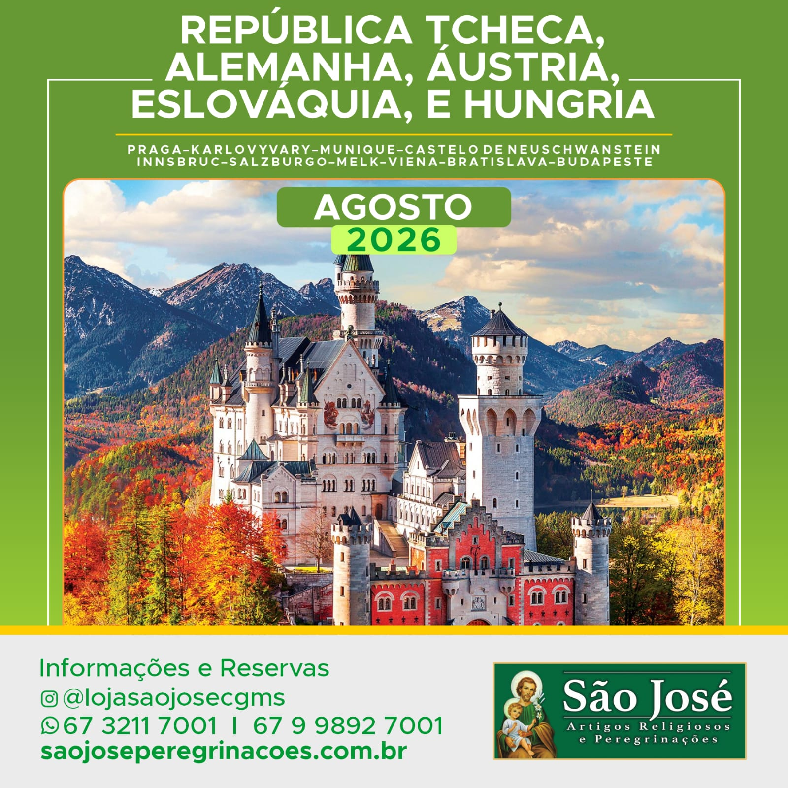

Uma viagem inesquecível pelo coração da Europa Central, visitando cinco países repletos de história, cultura e fé. Esta peregrinação une a beleza arquitetônica incomparável de Praga, a tradição cristã das cidades medievais alemãs, os Alpes austríacos de Salzburgo e Innsbruck, a charmosa Bratislava e a majestuosa Budapeste.
Cada cidade oferece uma experiência única de contemplação e crescimento espiritual, culminando em uma das mais belas peregrinações pela Europa Central.
Praga – a cidade das cem torres, com seu castelo medieval, Ponte Carlos e o centro histórico patrimônio UNESCO. Karlovy Vary – famosa cidade termal.
Munique – capital da Bavária, berço da cultura alemã. Castelo de Neuschwanstein – o famoso castelo de conto de fadas que inspirou Walt Disney.
Innsbruck – capital do Tirol austríaco rodeada pelos Alpes. Salzburgo – cidade natal de Mozart, patrimônio UNESCO. Melk – belíssima abadia beneditina sobre o rio Danúbio. Viena – a imperial capital da Áustria.
Bratislava – charmosa capital às margens do Danúbio. Budapeste – a "Pérola do Danúbio", com sua Basílica de Santo Estêvão e bairros históricos deslumbrantes.
Vagas limitadas. Entre em contato para confirmar disponibilidade e valores.
Solicitar informações pelo WhatsApp Formulário de ContatoNão realizamos pagamentos online.
Atendimento personalizado garantido.
Conheça todos os nossos roteiros e encontre a peregrinação ideal para você.
Ver Todas as Peregrinações